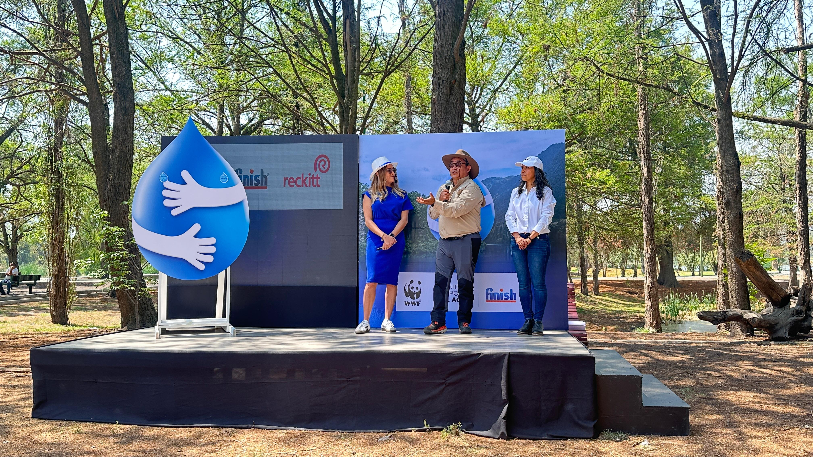

El agua, ese recurso vital que damos por sentado, enfrenta hoy una crisis sin precedentes. La sobreexplotación, el crecimiento poblacional y el cambio climático están poniendo en riesgo su disponibilidad en muchas partes del mundo. México no es ajeno a este problema, y es por eso que el Día Mundial del Agua, celebrado cada 22 de marzo desde 1993, es una oportunidad para reflexionar sobre la importancia de cuidar este recurso esencial y actuar para protegerlo.
“Empoderar cambios de comportamientos simples para asegurar que no se gaste agua innecesariamente”>
Este año, una nueva iniciativa busca reafirmar el compromiso con la conservación del agua en México, a través de una colaboración entre Reckitt, líder global en productos de salud, higiene y nutrición, y su marca Finish®, junto con el Fondo Mundial para la Naturaleza (WWF). Juntos están emprendiendo un camino para fomentar un consumo responsable del agua y enfrentar su escasez, ayudando a casi 6 millones de personas a través de la restauración de los bosques en la cuenca del Cutzamala, lo que garantizará la disponibilidad de agua para el futuro.
“Comprometemos a hacer un cambio desde uno mismo: Gota con guardianes del agua”>
El Poder de los Bosques en la Conservación del Agua
“El agua es un servicio ecosistémico que se renueva con la lluvia, y los ecosistemas forestales
juegan un papel fundamental en este ciclo. Los bosques capturan el agua de lluvia, que luego se
incorpora a las presas a través de los ríos. Por eso, en Reckitt y WWF estamos trabajando juntos
para restaurar los bosques que captan agua en las cuencas del Cutzamala. En los próximos tres años,
produciremos 900,000 árboles para reforestar 756 hectáreas en la región de la Mariposa Monarca, un
lugar clave para la hibernación de esta especie”, comenta Eduardo Rendón, biólogo y director del
programa de ecosistemas terrestres para WWF México.
“La arquitectura y el medio ambiente son clave para el cuidado del agua, urge educación ambiental”
Acciones que Transforman Vidas
Los trabajos que se llevarán a cabo junto a estas organizaciones incluyen la producción de 300,000
plantones y la reforestación de 252 hectáreas en los bosques de la cuenca del Sistema Cutzamala,
una extensión equivalente a 500 canchas de fútbol. Esta restauración contribuirá a la recarga de
236,205 m³ de agua en el mismo periodo, lo que tendrá un impacto directo en la disponibilidad de
agua. También, se están implementando programas de educación ambiental en escuelas y comunidades,
con la meta de alcanzar a más de 8,400 estudiantes y beneficiar a 5,400 personas.
Este esfuerzo también tiene un impacto positivo en la economía local. Se crearán 35 empleos permanentes y 290 temporales para la producción de plantas y la reforestación. Además, se llevarán a cabo 20 talleres en escuelas secundarias y universidades del Valle de México, además de involucrar a los colaboradores de Reckitt en voluntariados de reforestación.
Un Compromiso Global con la Conservación
El compromiso de Finish® con la conservación del agua no se limita a México. Desde 2021, la marca
ha colaborado con WWF en diferentes países y proyectos, como la restauración de los ecosistemas
del río Grande-Río Bravo en Estados Unidos y los humedales de España. Estos esfuerzos han beneficiado
tanto a la biodiversidad como a millones de personas que dependen de estos cuerpos de agua.
Carolina Mijares, líder de categoría de Marketing en México de Finish®, comenta: “En Finish®, creemos que cada gota cuenta. Esta colaboración con WWF refuerza nuestro compromiso de generar un cambio real, no solo inspirando a los mexicanos a reducir su consumo de agua, sino también impulsando acciones concretas para conservar este recurso vital. Este es solo un paso más en nuestra misión de mejorar la calidad de vida hoy y para las futuras generaciones.”

Además, este proyecto contribuirá a capturar cerca de 2,948 toneladas de CO₂ al año, mejorando la calidad del aire y combatiendo el cambio climático.
Invitación a la Acción Colectiva
Es evidente que la conservación del agua requiere de la participación activa de todos. Finish® y
WWF invitan a la población a unirse a esta causa, adoptando hábitos responsables que hagan una
diferencia significativa. Cada pequeña acción cuenta y, con ellas, podemos asegurar un futuro más
sustentable para las siguientes generaciones.
Aquí algunas recomendaciones para ahorrar agua:
- Reutiliza el agua de la regadera: Coloca una cubeta para recolectar el agua fría mientras se calienta y úsala para otras tareas domésticas.
- Toma duchas más cortas: Reducir el tiempo de baño a 5 minutos puede ahorrar hasta 200 litros de agua por persona al día.
- Lava el auto y los pisos con cubeta: Usa cubetas y franela en lugar de mangueras para minimizar el desperdicio de agua.
- Riega en horarios adecuados: Regar jardines por la noche reduce la evaporación y optimiza el uso del agua.
- Usa lavavajillas: Un lavavajillas puede ahorrar hasta 120 litros de agua en comparación con el lavado manual, eliminando la necesidad de prelavado y optimizando el consumo de agua.
Colaboración en números:
4 Pilares
300 mil árboles de reforestación
252 hectáreas impactadas
8400 estudiantes trabajando
38 millones de personas impactadas
352 trabajos otorgados